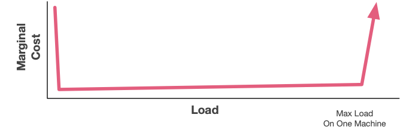
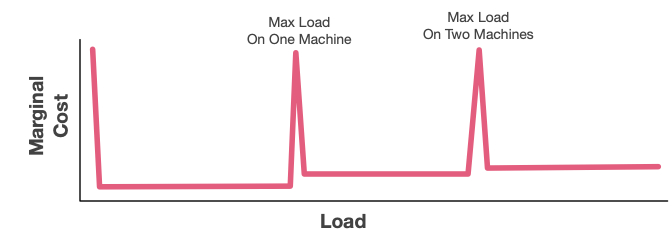
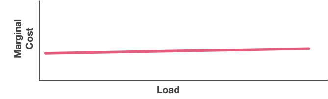

网络文章@202407
Apache Iceberg Z-Ordering: Performance Boost
里面有个PPT解释关于空间填充曲线, z-order是一种SFC(space filling curve)实现
https://tildesites.bowdoin.edu/~ltoma/teaching/cs3225-GIS/fall15/Lectures/gis_zorder.pdf
我的规则 - 丹尼尔-莱米尔的博客 — My rules – Daniel Lemire's blog
- Lemire’s creativity rule: Originality is overrated. It is often believed that an idea is only worth pursuing if it is original. Why do something that others have already attempted? Though it is true that you should not enter a crowded market, Google was not the first nor the last search engine. Apple did not produce the first personal computer, nor even the first smart phone. Amazon was not the first online store. Originality of its own sake is probably overrated. 莱米尔的创意法则：原创性被高估了。人们通常认为，只有原创的想法才值得追求。为什么要做别人已经尝试过的事？虽然你确实不应该进入一个拥挤的市场，但谷歌不是第一个也不是最后一个搜索引擎。苹果公司没有生产第一台个人电脑，甚至也不是第一款智能手机。亚马逊也不是第一家网上商店。为了原创而原创可能被高估了。
- Lemire’ definition of science: Science is neither a collection of facts nor a specific method. Rather, science is the concept that we should constantly challenge received ideas with trials and errors and seek the truth for ourselves. 莱米尔的科学定义：科学既不是事实的集合，也不是特定的方法。相反，科学是一种理念，即我们应该不断地用试验和错误来挑战接受的观点，并为自己寻求真理。
- Lemire’s benchmarking rule: Never benchmark on a laptop. Most programmers use laptops. Laptops are designed with a limited thermal envelope which means that they may frequently switch to lower-power modes, making it harder to run accurate benchmarks. It is also a broader concept: accurate measurements are difficult to achieve. You need much effort to get good measures. Experiments are difficult (but important). 莱米尔的基准测试规则：永远不要在笔记本电脑上进行基准测试。大多数程序员都使用笔记本电脑。笔记本电脑的热包络设计有限，这意味着它们可能会经常切换到低功耗模式，从而难以运行准确的基准测试。这也是一个更宽泛的概念：精确测量难以实现。你需要付出很多努力才能获得良好的测量结果。实验很困难（但很重要）。
- Lemire’s political rule: it is not going to end the way you think it will. Naive players often assume that they have won when their opponents are getting ready for an offensive. In 1941, Hitler thought that Europe was his to command. He was about to fail. In 1991, the Soviet Union occupied one sixth of Earth’s surface, it was a mighty empire. The next year, it would be gone. 莱米尔的政治规则：结局不会像你想象的那样。当对手准备进攻时，天真的玩家往往以为自己已经赢了。1941 年，希特勒以为欧洲是他的了。他即将失败。1991 年，苏联占领了地球表面的六分之一，是一个强大的帝国。第二年，它就会消失。
- Lemire’s Freedom rule: Freedom is something you earn by working constantly at it. Freedom requires considerable psychological strength. Extrinsic motivations (prestige and glory) and fear are the strongest chains. The leader of your country may have less freedom than the kid playing in the courtyard. You must learn to stand alone: it is one of the most difficult step a human being can take, but also the most important. 莱米尔的自由法则：自由是通过不断努力得来的。自由需要相当大的心理力量。外在动机（声望和荣誉）和恐惧是最强大的枷锁。你的国家领导人可能比在院子里玩耍的孩子拥有更少的自由。你必须学会独善其身：这是人类最难迈出的一步，但也是最重要的一步。
- Lemire’s computing rule: resolute engineering trumps mathematics. It is often not the algorithms and the human cleverness that matters most, but rather the raw speed and efficiency of our computers. 莱米尔的计算法则：坚定的工程学胜过数学。最重要的往往不是算法和人类的聪明才智，而是我们计算机的原始速度和效率。
使用苹果二十年后，与 Linux 和安卓共存 — Living with Linux and Android after two decades of Apple
Linux is wonderful, is flawed, is messy, is beautiful, is nerdy, is different. Android is customizable, is open, is fragmented, is less polished, is experimental. All the pros and the cons are true at the same time. Linux 是美妙的、有缺陷的、混乱的、美丽的、书呆子的、与众不同的。安卓是可定制的、开放的、碎片化的、不那么完美的、实验性的。所有的优点和缺点都同时存在。
And it's a compelling adventure to discover whether the trade-offs speak to you. Don't be afraid to take the trip, but give it at least two weeks (if not two months!), and don't think of the journey as a way to find the same home in a different place. Be open to a new home, in a new way, in a new place. You might just like it. 这也是一次引人入胜的探险，让我们来看看这些取舍是否适合你。不要害怕去旅行，但至少要花两周时间（如果不是两个月的话！），不要把旅行当成在不同的地方寻找同一个家的方式。敞开心扉，以新的方式，在新的地方找到新的家。你可能会喜欢上它。
Notion 灵活性背后的数据模型 — The data model behind Notion's flexibility
notion笔记是如何组织起来的，笔记的数据模型是怎么样的。
构建和扩展 Notion 数据湖 — Building and scaling Notion’s data lake
2022年从snowflake切换到hudi/spark/s3节省1M美金
不仅仅是规模 - 马克的博客 — Not Just Scale - Marc's Blog
分布式系统相对单机的优势，并不仅仅是在性能上。作者列举了其他好几个方面的优势。不过其实这些优势只有在比较大规模的组织下才有意义。设计和运维分布式系统的成本是比较高的，所以只有当公司有规模化的时候才有利。
- Availability. Systems made up of multiple redundant components can offer levels of availability that single-machine systems simply can’t match. Distributed systems achieve exponentially better availability at linear cost, in a way that’s almost entirely hands-off. Single-machine systems can only achieve higher availability by increasing time-to-failure or reducing time-to-recovery, which can be both complex and expensive. 可用性。由多个冗余组件组成的系统可以提供单机系统无法比拟的可用性。分布式系统以线性成本实现了成倍提高的可用性，而且几乎完全不需要人工干预。单机系统只能通过延长故障时间或缩短恢复时间来提高可用性，而这可能既复杂又昂贵。
- Durability. Making multiple copies of data on multiple machines is the only credible way to make online data highly durable. Single-system approaches like RAID are based on a fundamentally flawed assumption about failure independence. Offline data can be made durable with offline backups, of course. 耐用性。在多台机器上制作多个数据副本是使在线数据高度耐用的唯一可靠方法。RAID 等单系统方法所基于的故障独立性假设存在根本性缺陷。当然，离线数据也可以通过离线备份实现持久性。
- Utilization. Multi-tenant systems achieve lower costs and higher utilization by packing multiple diverse workloads onto the same resources. This works in two ways: it allows workloads on different seasonal cycles to share resources in the shorter-term, and allows systems with unpredictable load spikes (or failure recovery spikes) to share spare burst resources. This allows both faster recovery, and significantly improved peak-to-average ratios. In many practical systems the efficiency wins from improving the peak-to-average ratio exceed the opportunities to tune single-machine systems for greater efficiency. 利用率。多租户系统通过将多个不同的工作负载打包到相同的资源上，实现了更低的成本和更高的利用率。这有两个方面：一是允许不同季节周期的工作负载在较短时间内共享资源，二是允许具有不可预测负载峰值（或故障恢复峰值）的系统共享备用突发资源。这样既能加快恢复速度，又能显著提高峰值与平均值的比率。在许多实际系统中，提高峰均比所带来的效率收益超过了调整单机系统以提高效率的机会。
- Latency. By being able to spread short-term spikes of load over a larger pool of resources, distributed systems can reduce tail latencies caused by short-term system overload. 延迟。分布式系统可以将短期的负载峰值分散到更大的资源池中，从而减少短期系统过载造成的尾部延迟。
- Specialization. Distributed systems made of multiple components allow those components to be specialized for workloads that are latency-sensitive, throughput-sensitive, locality-sensitive, compute-intensive, memory-intensive, or whatever other unusual properties we had. A great example is from the MemoryDB paper where we saw how composition of specialized components allowed the overall system to both significantly reduce memory demand and bring down tail latency. 专业化。由多个组件组成的分布式系统允许这些组件针对延迟敏感型、吞吐量敏感型、位置敏感型、计算密集型、内存密集型或其他任何不寻常特性的工作负载进行专业化。MemoryDB 论文中就有一个很好的例子，我们看到了专业化组件的组成如何使整个系统既能显著降低内存需求，又能降低尾部延迟。
- Isolation. Building systems out of multiple components allows components to be optimized for the security properties that matter to them. For example, notice how in the Firecracker paper, Lambda’s architecture combines strongly-isolated components that execute customer code, with multi-tenant components that perform simple data-lookup tasks. 隔离。利用多个组件构建系统，可以优化组件的安全属性。例如，请注意 Firecracker 论文中，Lambda 的架构是如何将执行客户代码的强隔离组件与执行简单数据查询任务的多租户组件相结合的。
- Changes. Perhaps the most universal requirement in systems, and one that is frequently overlooked, is the ability to deal with change. Deploying new code as the business evolves. Patching security issues. Reacting to customer issues. In distributed systems, its typical to take advantage of the high availability mechanisms of the system to allow for safe zero-impact patching and deployments. Single-machine systems are harder to change. 变化。也许系统中最普遍的需求，也是经常被忽视的需求，就是应对变化的能力。随着业务的发展部署新代码。修补安全问题。对客户问题做出反应。在分布式系统中，典型的做法是利用系统的高可用性机制，实现安全的零影响修补和部署。单机系统则更难进行更改。
您如何打发时间？- 马克的博客 — How Do You Spend Your Time? - Marc's Blog
如何规划自己的时间吧，我的一个重要感觉就是需要积极主动地进行规划，可能这个规划需要不断调整，然后就执行。设定这个规划很有讲究，我觉得对于像我这样视野不开阔的人需要有人来帮助，另外就是要和team alignment.
Sticking to your budget requires saying no. You’re a capable person, and a lot of people know that, so lots of folks are going to ask for your help with stuff. Sometimes, you’re going to need to guide them elsewhere. Or just say no outright. That doesn’t feel good, but if you always say yes to stuff that isn’t that important you can’t be surprised when you don’t get important stuff done.
遵守预算需要说 "不"。你是个能干的人，很多人都知道这一点，所以很多人都会请你帮忙做事。有时，你需要引导他们去别的地方。或者直接拒绝。这感觉并不好，但如果你总是对不那么重要的事情说 "好"，那么当你做不好重要的事情时，你就不会感到惊讶了。
There are some ways that I see folks taking this kind of thing too far. One of them is setting important in the wrong way: focusing on visibility, or trend chasing, or executive face time, or whatever. I haven’t found focusing on those things valuable.
我发现有些人在这方面做得太过分了。其中之一就是以错误的方式设定重要性：关注知名度、追逐趋势、高管面谈时间或其他。我不认为关注这些事情有什么价值。
Then, there’s the dirty work. The messy stuff that’s always urgent, and only sometimes important. Some folks get this wrong by always taking it on. Why didn’t you get this important task done? Because I was on this ticket, and that customer issue, and those on-call tasks, and so on. It’s super easy, in an operationally-heavy business like ours, to get into nothing but the details. That’s a trap. Going too far the other way is a trap too. As a leader, you need to be deeply aware of these tasks. You need to be hands-on with the most important ones. How can you expect to make successful changes to a system you don’t understand?
然后是脏活累活。这些杂乱无章的工作总是很紧急，只是有时很重要。有些人总是把它揽在自己身上，从而弄巧成拙。你为什么没有完成这项重要任务？因为我在处理这个票据，那个客户问题，还有那些待命任务，等等。像我们这样业务繁重的企业，很容易陷入只关心细节的怪圈。这是一个陷阱。反其道而行之也是一个陷阱。作为领导者，你需要对这些任务有深刻的认识。你需要亲力亲为，完成最重要的任务。你怎么能指望对一个你不了解的系统进行成功的改革呢？
作者最后面也分享了他的几个主题（或者说切入点吧）。超前的规划需要一定强度的输入，这种输入似乎是没有办法从平时被动的工作中得到的，某种程度上还是要去主动了解。
- IC (individual contributor) work This includes writing code, reading code, reviewing code, debugging, testing, standing around a whiteboard talking code and design, writing design docs, reviewing design docs, and so on. The core stuff that is the practice of software engineering. IC（个人贡献者）工作 包括编写代码、阅读代码、审核代码、调试、测试、围着白板讨论代码和设计、编写设计文档、审核设计文档等等。这些都是软件工程实践的核心内容。
- Mentoring and Teaching This includes ad-hoc mentoring, standing one-on-ones2, and simply having time open on my calendar for the “do you have a few minutes to chat about my career?” conversations with folks near me. I also tend to put things like tech talks into this bucket. 指导和教学 这包括临时指导、一对一常设指导 2 ，以及在我的日程表上留出时间，以便与我附近的人进行 "您有时间聊聊我的职业生涯吗？我还倾向于将技术讲座等活动归入这一类。
- Strategic Stuff What are we doing next year? What do the next five years look like? Where are the industry trends going? What are the new things our customers are thinking about that seems like it could be big? What skills am I going to need? What skills are the folks in my organization going to need? 战略内容 我们明年要做什么？未来五年会怎样？行业发展趋势如何？我们的客户正在考虑哪些看起来可能很重要的新事物？我需要哪些技能？我的员工需要哪些技能？
- Rhythm of Business This is the day-to-day. The way it looks has varied a lot over my career (more business reviews, less sprint planning), but includes everything involved in getting hands-on with the business. This includes the technical side (operations reviews, security meetings, looking into tickets and metrics, that kind of thing), money side (business reviews, etc), and people side (talent reviews, interviewing, and so on). 业务节奏 这是日常工作。在我的职业生涯中，它的形式变化很大（更多的是业务审查，较少的是冲刺计划），但包括与业务实践相关的一切。这包括技术方面（运营审查、安全会议、查看票据和指标等）、资金方面（业务审查等）和人员方面（人才审查、面试等）。
- Learning I put aside time during my work day to learn things, including reading papers, implementing algorithms I think are potentially important, reading books, and similar activities. This often feels hard to justify, but isn’t - over time I’ve gathered a good set of success stories of business value of me spending my time this way3. 学习 我在每天的工作中留出时间来学习，包括阅读论文、实施我认为可能很重要的算法、阅读书籍以及类似的活动。这常常让人觉得难以自圆其说，但其实不然–随着时间的推移，我已经收集了一系列成功的案例，说明我这样花时间的商业价值 3 。
- Customers I like talking to customers, and some of them like talking to me. Customers are the most important thing to stay connected to. 客户 我喜欢与客户交谈，有些客户也喜欢与我交谈。与客户保持联系是最重要的。
可扩展性到底是什么？- 马克的博客 — What is Scalability Anyway? - Marc's Blog
A system is scalable in the range where the cost of adding incremental work is approximately constant. 在增加工作量的成本大致不变的范围内，系统具有可扩展性。
I like this definition, in terms of incremental or marginal costs, because it seems to clear up a lot of the confusion by making scalability a customer/business outcome. 我喜欢这个以增量或边际成本为基础的定义，因为它似乎通过将可扩展性作为客户/业务成果而消除了许多困惑。
下面分别是单机，多机，以及弹性下，可扩展性的成本模型

可以看到每次扩机器的话，那么边际成本很高，比如做sharding. 但是如果成功的话，那么很快又会下来。

AWS Lambda/S3/DynamoDB 等弹性服务，我觉得snowflake也算是吧。

更好的捕鼠器建造指南 - 马克的博客 — The Builder's Guide to Better Mousetraps - Marc's Blog
这个纯粹就是从公司角度出发，是否需要自己去创建一样新的东西，还是使用已有的东西。
我总结一下大致有下面几点：
- 成本收益分析（是否值得做）, 机会成本分析(如果我不做，我可以做什么事情)
- 是否想长期维护它
- 这个问题是否比原有问题更加简单（如果简单通常可能自己做会更好）
- 这个问题是不是和原有问题有比较大的差异
- 即使是相同的问题，这个问题尺度scale是不是不同
- 我理解这个问题的真正困难的地方吗？
- 技术风险是什么？尝试的话多久可以看到效果？
- 如果我做这件事情是否更有优势？
我觉得这个同学思考挺深入的，这些东西在做决策的时候非常关键。